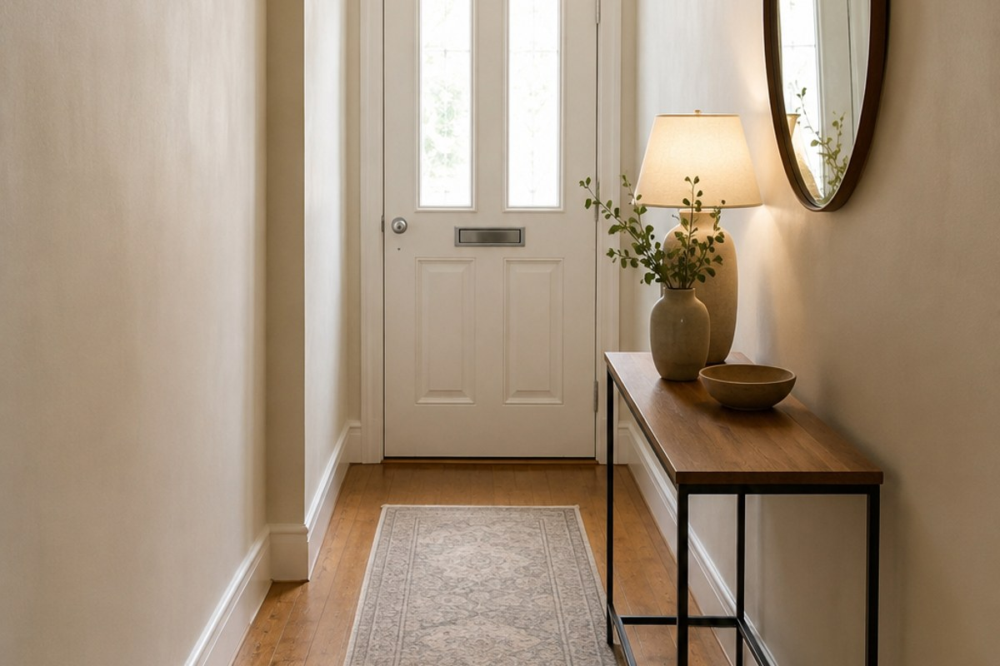
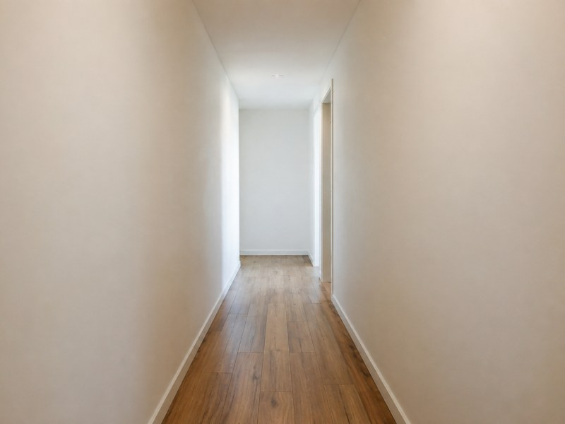
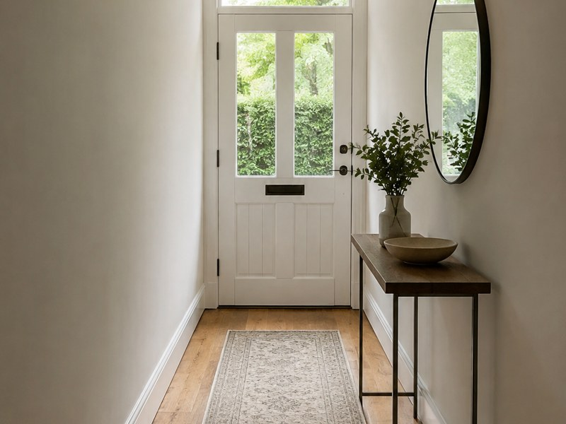
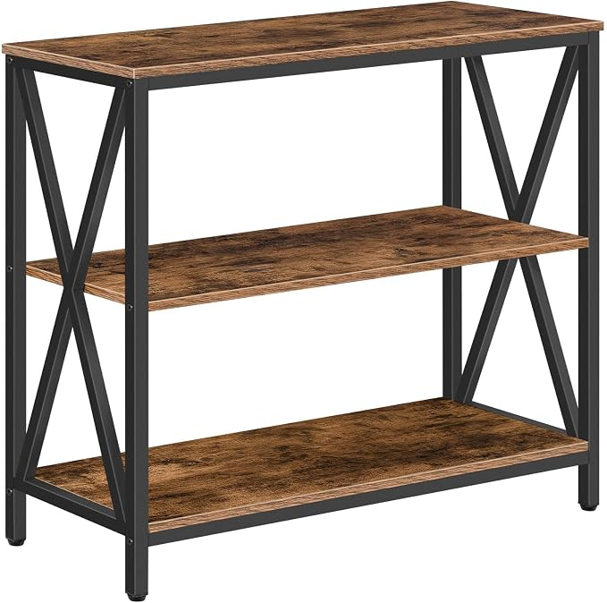
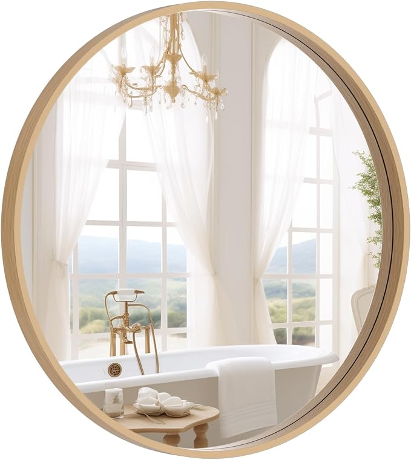
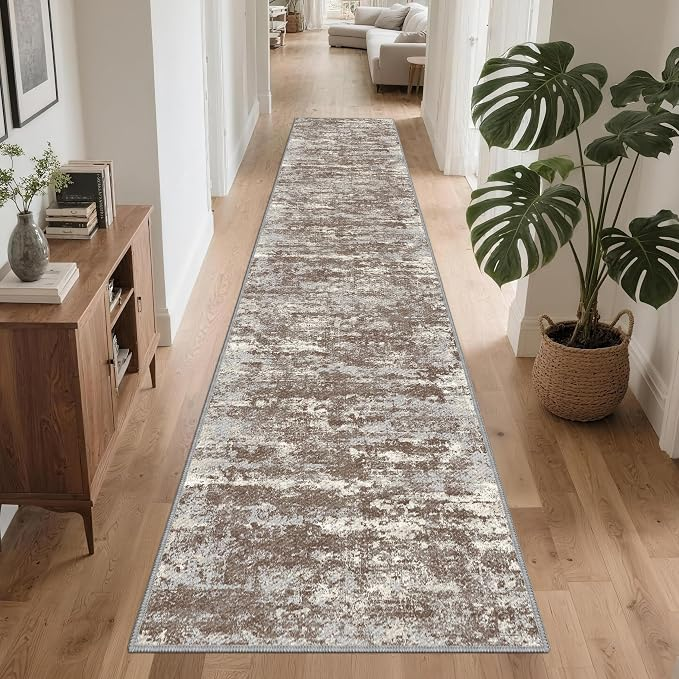

Hallways are often treated as leftover space, so they collect doors, coats and clutter without ever becoming useful. The fix is not more decoration: it is controlling depth, creating a visual stop and making the landing spot work.
As an Amazon Associate I earn from qualifying purchases. Links below are affiliate links (#ad) - they cost you nothing extra. Nothing here is a paid placement, and no brand sees this page before it goes up.
In a narrow hall, furniture depth is the first decision because every centimetre comes out of the walking route. Keep a console under 30cm deep if you want to pass it while wearing a coat; once furniture pushes beyond that, the same hallway can start feeling like a squeeze rather than a room.
Do not solve a cramped hall by adding a deeper cupboard simply because it offers more storage. Measure the tightest point beside the furniture, then walk through with your usual coat or bag; if you have to twist your shoulders or avoid the furniture, the storage has taken more space than the hallway can spare.


A bare hallway gives the eye nowhere to settle, which is why an otherwise tidy space can still look unfinished. A mirror at the end creates a clear destination for the eye and reflects the hall back into the space; the photograph pair works because the width has not changed, only what the eye has to stop on.
Resist filling every wall to make the hallway feel finished. One mirror and one useful surface can do more than a row of frames, particularly where doors already create visual breaks; decoration that narrows the route or competes with the landing spot is solving the wrong problem.
Check the 30cm depth limit. Measure the console before ordering it, including anything that protrudes, and compare that measurement with the narrowest part of the route; if you already struggle to pass with a coat on, adding furniture is not the fix.
Check the eye-line at the end. Stand at the entrance and look straight down the hall before hanging the mirror; if the view ends on a blank wall, that is the visual dead end the mirror needs to interrupt.
Check the floor strip that takes the traffic. Walk from the outside door towards the rooms you use most and identify the continuous strip underfoot; a runner should serve that route, while several small rugs can create edges and interruptions where you actually need clear movement.

A narrow console table creates the landing spot the hallway lacks without demanding the depth of a conventional cabinet. Before buying, measure the tightest section of the hall and check the table's actual depth against the under-30cm target. Do not choose it for a hallway where even that depth would make the walking route awkward.
Best for: narrow hallways and tight spaces
Shop on Amazon →paid link
A round wall mirror gives the eye a deliberate place to stop, which is especially useful at the end of a corridor that otherwise reads as a dead end. Before buying, check the wall area and sightline so it can be positioned where you actually see it when entering the hall. It is not for a wall that is already crowded or a layout where the mirror cannot become the visual destination.
Best for: brightening and opening up narrow halls
Shop mirror on Amazon →paid link
A hallway runner covers the strip that takes repeated foot traffic, giving the floor a defined route instead of leaving the busiest section exposed. Before buying, check that its placement leaves the doors and main walking path clear, particularly at the narrowest point. It is not for a hallway where the available floor cannot accommodate a continuous runner without creating obstructions.
Best for: adding warmth and protecting hallway floors
Shop runner on Amazon →paid linkMeasure the narrowest point first, then decide whether a console under 30cm deep can leave the route comfortable. Once the landing spot works, add the mirror and runner to give the same small space a destination and a defined path.
We look for pieces that change how a small room works, not the cheapest option and not the most photographed one. Everything here has to survive a rental: no drilling, no permanent fittings, nothing that needs a second person to install.
Room images on this site are our own illustrations, not photographs of the products. We link to the retailer so you can see the real item.
Written and selected by Rooms and Roads · Updated August 2026 · links checked August 2026